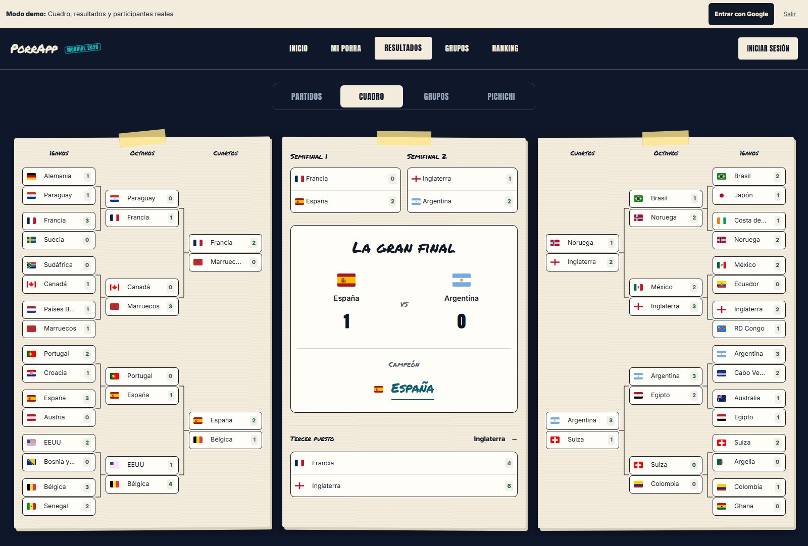

PROYECTO 01

PorrApp
Fútbol entre amigos
Ligas privadas para el Mundial y competiciones por jornadas. Cada liga elige su formato y puntuación; los resultados de ESPN actualizan los puntos y la clasificación en directo.
- Cuadros y predicciones 1X2
- Reglas por liga
- Resultados por WebSocket
Java 21 · Spring Boot 4.1 · React · TypeScript · PostgreSQL
